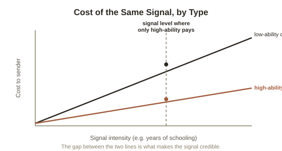

Chapter 2: Signaling — Proving It Without Just Saying It
Chapter 1 ended with a question for the informed side of a deal: if you genuinely are the peach, the strong candidate, the reliable borrower, how do you prove it to someone who has good reason not to just take your word for it? Simply asserting it doesn't work — a lemon owner can say "trust me, it's a great car" exactly as easily as a peach owner can, so the claim itself carries zero information. What does carry information is a signal (an action taken specifically to demonstrate a hidden quality, which only works if it's harder or costlier for a low-quality type to fake than for a high-quality type to genuinely do) — and the theory of which signals actually work, and why, turns out to be surprisingly precise.
Spence's insight: it doesn't need to teach you anything to work
Economist Michael Spence, in a 1973 paper on job markets, made a claim that still surprises people the first time they hear it: a signal can be economically useful even if it transfers zero relevant skill or knowledge. His example was a college degree. An employer can't directly observe a candidate's underlying ability or work ethic before hiring them — that's the asymmetric information problem from Chapter 1, applied to labor markets. A degree helps the employer anyway, Spence argued, not necessarily because of what was learned, but because it's differentially costly to obtain: a genuinely high-ability, hard-working person can get through a demanding degree program faster, more cheaply, and with less personal cost than a low-ability person can — even if both are studying the exact same subject matter. Because the cost of the signal is systematically lower for the type that's actually worth hiring, only that type finds it worthwhile to send it. The signal reveals type through the economics of who's willing to pay for it, independent of its content.

A much older version of the same logic, from biology
Five years before Spence's paper, evolutionary biologist Amotz Zahavi proposed something structurally identical to explain a puzzle in animal behavior: why do peacocks grow tails that are metabolically expensive, visually conspicuous to predators, and mechanically clumsy — the exact opposite of what natural selection should favor? Zahavi's handicap principle answers that the tail's cost is the entire point. A genuinely weak, unhealthy, or parasite-ridden peacock can't afford to grow and maintain an enormous, high-maintenance tail and still survive; only a peacock with real underlying fitness can bear that handicap and keep functioning. A peahen selecting for tail size isn't being fooled by a costume — she's reading a signal that's expensive enough to fake that, in practice, only genuine quality can sustain it. Spence's degree and Zahavi's tail are the same mechanism, one running through a university's tuition bill and the other through raw metabolic cost.
Recognizing signals once you know the pattern
Once the mechanism is named, it shows up constantly. An unpaid or low-paid prestigious internship signals that a candidate can afford to work for little money now — a costly, and therefore informative, credential for financial stability and connections, regardless of what tasks were actually performed. A diamond engagement ring, historically justified by de Beers marketing as a "two months' salary" benchmark, functions as a costly signal of a partner's financial commitment specifically because it's expensive enough that a less committed partner would rather not bother. A firm's expensively renovated, prime-location office signals financial stability to clients and investors in a way a cheap one-room office can't, even if the actual work happening inside is identical. In each case, the useful information isn't in what the signal literally says — it's in the fact that only the genuine type could afford to send it at all.
Where signaling stops being efficient
Signaling solves the trust problem, but it doesn't come free, and this is the part of Spence's model that gets less attention than it deserves: the resources spent on the signal itself are, from a pure information-transfer standpoint, often wasted. If a degree really does teach nothing employers directly need, then the entire cost of obtaining it — years of tuition and foregone income — was spent purely proving something that a cheaper, equally reliable test could in principle have proven, if one existed. This is sometimes called a signaling arms race: once a signal becomes the norm, its absence itself becomes a negative signal, so the threshold keeps rising (a bachelor's degree, then a master's, then unpaid credentialing on top of that) without necessarily producing more real ability at the top. Spence's original insight cuts both ways — a mechanism that solves a real trust problem, at a real and sometimes escalating cost.
Try this
Ideas for noticing or testing this in your own life.
- Pick a credential or purchase you associate with quality or seriousness (a degree, a certification, a specific brand, an expensive venue for an event) and ask what, specifically, makes it costly to fake — if the honest answer is "nothing, really," it may be weaker signal than its reputation suggests.
- Notice a signal you're currently sending in your own life — professionally or personally — and ask whether you're paying its cost for the signal itself, or because it also delivers real underlying value to you independent of who's watching.
Worth pulling on?
A few loose threads from this chapter — if any of these genuinely grab you, that's a good sign of where to go next.
- Signaling is the informed side proving itself voluntarily — but the uninformed side isn't passive either, and has its own toolkit for forcing information out. → The subject of the next chapter: screening.
- The idea that hard-to-fake, differentially costly credentials matter more than content connects directly to what actually makes expertise economically valuable. → Already in the library: Expertise and Deliberate Practice and Leverage and Income's coverage of specific knowledge both connect here.